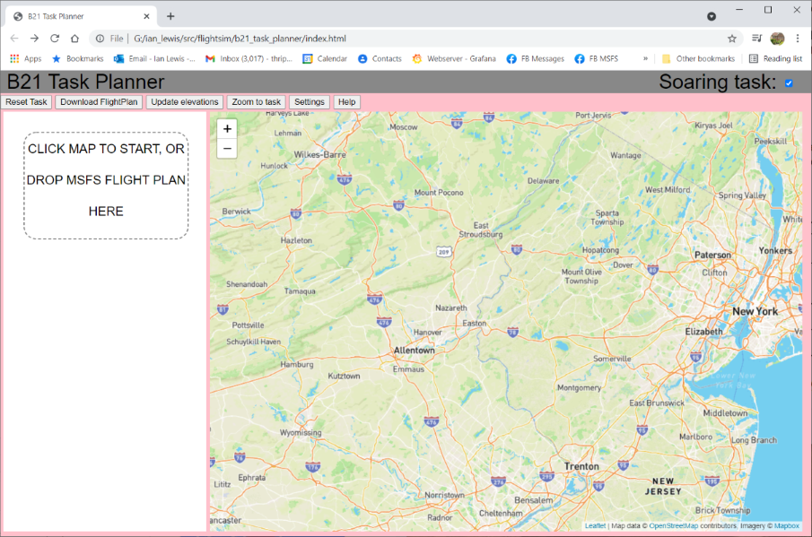
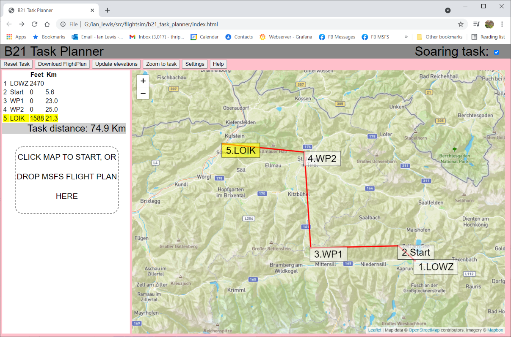
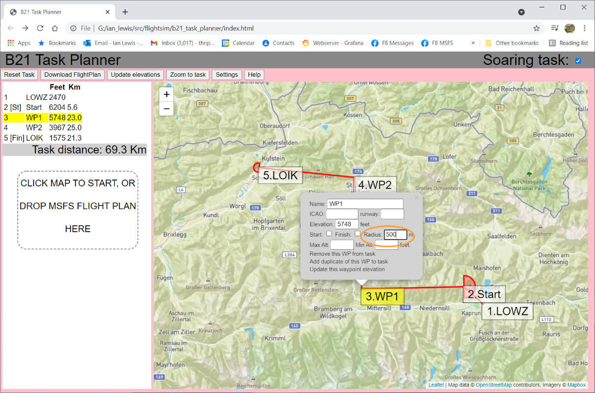
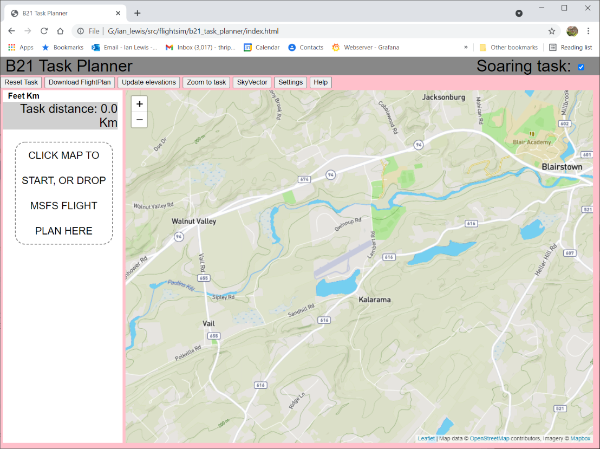
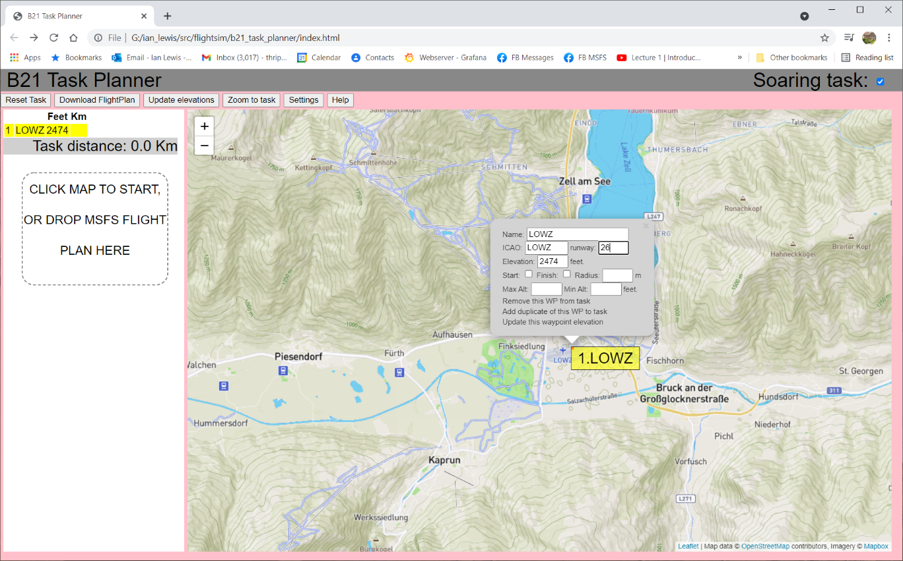
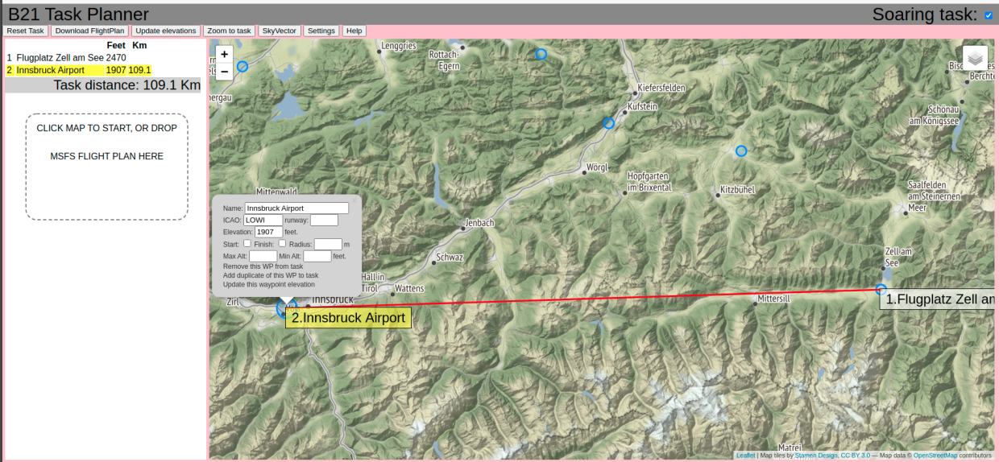
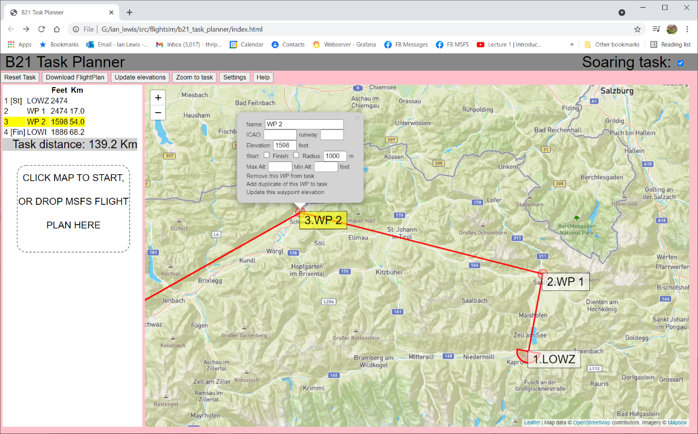

We want to create soaring tasks in MSFS as simply as possible, e.g. a three-waypoint task could be created with three clicks on a map. The soaring tasks are created as 'standard' MSFS Flight Plans, with a good example here.
B21 Task Planner has THREE ways to get started with a Flight Plan:
This is useful if you want to put a link on your website which displays an existing MSFS flight plan you have on that website.
Soaring tasks benefit from additional information embedded into the MSFS .pln file so the soaring Nav gauges and other addons (e.g. ALBATROSS) can pick up this information. Sticking with the MSFS '.pln' format gives us the maximum compatibility and flexibility with MSFS and other flight planning tools. The soaring parameters need to be passed to the aircraft without corruption by MSFS - these include:
The 'additional' soaring parameters in the flight plan are entirely optional, and the B21 Task Planner can equally produce a valid MSFS flight plan with none of these parameters provided. When the optional parameters are provided, and encoded into the waypoint name, custom soaring gauges in the aircraft (such as the B21 Nav Panel) can pick those parameters out of the name and display the name without the parameters to the pilot in the gauge, i.e. a waypoint called "*Burnt Cabins+2310|6000/1000x800" will be displayed in the cockpit as "Burnt Cabins".


Most of these hints relate to the fact that MSFS ignores much of the information in the Flight Plan, e.g. it will take the airport ICAO code but look up any data relevant to that (such as name of the airport, and its elevation) in the MSFS database rather than accepting what is in the Flight Plan. For intermediate waypoints MSFS will accept the name but completely ignore the altitude in the Flight Plan and generate an estimate of the altitude it thinks the autopilot should be flying at instead.
(1) Always start and end the flightplan with an AIRPORT. For these you will need the ICAO code, and for the departure airport it is possible to specify a launch runway but you will need to look the name for this in MSFS (e.g. "26" or "06L"). Confusingly you cannot label those airports as the START or FINISH of the soaring task because of the way MSFS treats that data. Instead you can create another 'user' waypoint nearby (e.g. at the downwind end of the runway) and flag that as the finish e.g. here.
(2) Generally it is better to have Start and Finish waypoints that are other than the departure and destination airports. They can be in roughly the same location, if that is what is wanted, but zoom in on the map and create an additional waypoint such as "Mifflin Start" rather than using the ICAO code "KRVL".
(3) Task waypoints, even ones which are airports, should be specifed WITHOUT the ICAO code, so they will be stored in the Flight Plan as 'User' waypoints. MSFS does not allow the additional soaring parameters (like max/min heights) relative to airports.
(4) If you want to create a general VFR flightplan, perhaps nothing to do with soaring, you can uncheck the [Soaring Task] checkbox in the top-right of the window and the waypoint menu will be simplified.
(5) Soaring flightplans created with B21 Task Planner can contain additional information that is not normally stored inside an MSFS Flight Plan. The 'trick' used is to add data to the name of the waypoint, e.g. a waypoint named in the Flight Plan as "Burnt Cabins+2340" can be read by the soaring Nav instruments as a waypoint called "Burnt Cabins" at an elevation of 2340 feet. That waypoint will be displayed as "Burnt Cabins" in the soaring instruments, while the Flight Plan remains valid for any use in MSFS (where it will be displayed as "Burnt Cabins+2340"). Note that MSFS is generally ok with elevations for Airports but it ignores elevations in the Flight Plan for intermediate waypoints.
(6) B21 Task Planner remembers your settings from one session to the next (assuming the same browser), this includes the units you've chosen for altitudes and distances, and the map location and zoom.
We'll use an example starting with an existing flightplan as apart from the first step (the 'drop') the use of the program is the same as if you'd clicked on the map to create the waypoints.
Here's the program (i.e. web page) when you first open it. The map position will be wherever you left it last time you used the program.
After we 'drag & drop' a flightplan:
Checking the box to show which waypoint is the task start. We also set a maximum start height:

Similarly we can set a checkbox to show which is the FINISH waypoint. Note the task distance is calculated from Start to Finish, ignoring legs before or after those.

A 'killer' feature of the B21 Task Planner (for soaring tasks) is it can look up the ground elevation for each waypoint an annotate the data in the MSFS Flight Plan with that information. For B21 instruments that display Nav information including Arrival Height, this elevation allows that information to be AGL. You can click the [Update elevations] button which will update the elevations for ALL the waypoints, or for a single waypoint you can click the waypoint "Update this waypoint elevation" option, as illustrated below.

Setting a 'radius' for each turnpoint is also easy via the waypoint pop-up menu: 
At this point the task is complete, and can be downloaded by clicking the [Download] button:
The Flight Plan MUST begin and end with an airport, and for these you MUST know the ICAO code to enter into the waypoint data. The B21 Task Planner includes an airports database with ICAO codes but be aware MSFS has its own database so there may be differences. One easy way to find the ICAO code for the airport (e.g. LOWZ for Zell am See airport) is to use the World Map page in MSFS, and that will also give you the runway names if you want to specify one for the departure (you should, so the plane is facing into wind).
If you have an existing Flight Plan containing the airports you're interested in, you can simply drag-and-drop that onto the Drop Zone and those waypoints will be imported.
The [SkyVector] button will open a new tab in your browser, with the SkyVector map lined up the same as the map within B21 Task Planner.
So first navigate to the airport of interest on the map in B21 Task Planner, the example below shows Blairstown NJ - you'll notice the Task Planner database includes Blairstown so at this point you could click on it and this exercise would be complete, but let's continue with the SkyVector exercise...
Then click the [SkyVector] button. A new tab opens, and you can see Blairstown Airport also centered on the SkyVector map with the ICAO code (1N7) shown next to the airport name:

Given the "1N7" code for Blairstown Airport, you can click the SkyVector [Airports] button, put "1N7" (or Blairstown) into the search box, and you will get the Airport information page including the runways "07" and "25" (top-left of page):

Here we will click on the existing Zell am See airport displayed on the map, adding the ICAO code. We can also add a departure runway. Note that MSFS will accept cardinal values, e.g. EAST or SOUTHWEST for the runway.
Now is a useful time to add the destination airport - that only takes one click:
Now if you RESELECT LOWZ (because additional waypoints are always added after the CURRENTLY SELECTED waypoint), you can click on the map and add waypoints between those airports:
Note you can drag the waypoints around which means you can 'draft' a task keeping the map at a fixed scale enabling you to see the whole task, and then you can zoom in on individual waypoints and drag them to the exact point you want them e.g. the downwind end of the runway often makes sense for finish waypoints.
At this point you have pretty much caught up with the example given before with a loaded MSFS Flight Plan, and the editting of waypoint radius, and min/max altitudes is the same.
The B21 Task Planner allows the user to choose the units they want to input/see for altitude (meters or feet) and distance (kilometers or miles). However, when these values are encoded into the MSFS flight plan WP name, altitude/elevation will be in feet MSL and distances will be in meters.
| WP elevation | For an airport the default elevation will be the ground elevation for the airport defined by MSFS. In most circumstances this should work great. For a user waypoint, the ground elevation will default to 0 MSL. |
| WP max altitude | no limit |
| WP min altitude | no limit |
| WP radius | 500 meters |
To pass these additional parameters through to MSFS and the aircraft, while ensuring the flight plan remains completely compatible with 'plain vanilla' MSFS, the B21 Task Planner encodes the additional parameters into the name assigned to the waypoint.
* is used to flag a WP as the Start or Finish of the task, prepended to the name, e.g. "*Burnt Cabins" will imply the "Burnt Cabins" waypoint is the start or finish (the first *WP will be the start, the second one will be the finish)
+ indicates the elevation in feet of the waypoint, e.g. "Burnt Cabins+2310" implies the "Burnt Cabins" waypoint is at 2310 feet.
| indicates the max altitude in feet permitted at the waypoint.
- any time after the | indicates the min altitude in feet permitted at the waypoint.
x any time after the | indicates the radius of the waypoint in meters
| Burnt Cabins | A waypoint with the default values for the soaring parameters (e.g. a waypoint elevation of 0 MSL) |
| *Burnt Cabins | This waypoint is the start or finish WP of the task. |
| Burnt Cabins+2310 | The elevation of the WP is 2310 feet |
| *Burnt Cabins+2310|6000 | Burnt Cabins is the start (or finish) WP with an elevation of 2310 feet and a max start height of 6000 feet MSL. |
| Burnt Cabins|6000 | The WP has a max altitude of 6000 feet MSL |
| Burnt Cabins|-1000 | The WP has a min altitude of 1000 feet MSL |
| Burnt Cabins|x800 | The WP has a turn radius of 800 meters. The | is required anywhere before the x, which can most simply achieved by adding the turn radius after the other WP parameters. |
| *Burnt Cabins+2310|6000-1000x800" | The WP "Burnt Cabins" is a start or finish waypoint, at an elevation of 2310 feet MSL, a maximum turn altitude of 6000 feet, a minimum turn altitude of 1000 feet, and a turn radius of 800 meters. |